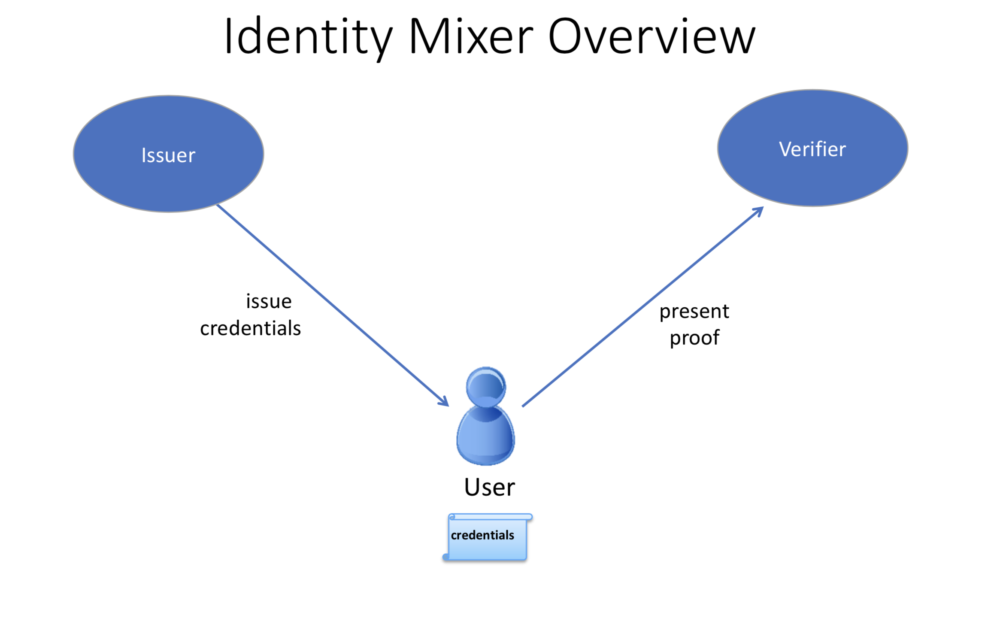

MSP Implementation with Identity Mixer¶
What is Idemix?¶
Idemix is a cryptographic protocol suite, which provides strong authentication as well as privacy-preserving features such as anonymity, the ability to transact without revealing the identity of the transactor, and unlinkability, the ability of a single identity to send multiple transactions without revealing that the transactions were sent by the same identity.
There are three actors involved in an Idemix flow: user, issuer, and verifier.
An issuer certifies a set of user’s attributes are issued in the form of a digital certificate, hereafter called “credential”.
The user later generates a “zero-knowledge proof” of possession of the credential and also selectively discloses only the attributes the user chooses to reveal. The proof, because it is zero-knowledge, reveals no additional information to the verifier, issuer, or anyone else.
As an example, suppose “Alice” needs to prove to Bob (a store clerk) that she has a driver’s license issued to her by the DMV.
In this scenario, Alice is the user, the DMV is the issuer, and Bob is the verifier. In order to prove to Bob that Alice has a driver’s license, she could show it to him. However, Bob would then be able to see Alice’s name, address, exact age, etc. — much more information than Bob needs to know.
Instead, Alice can use Idemix to generate a “zero-knowledge proof” for Bob, which only reveals that she has a valid driver’s license and nothing else.
So from the proof:
Bob does not learn any additional information about Alice other than the fact that she has a valid license (anonymity).
If Alice visits the store multiple times and generates a proof each time for Bob, Bob would not be able to tell from the proof that it was the same person (unlinkability).
Idemix authentication technology provides the trust model and security guarantees that are similar to what is ensured by standard X.509 certificates but with underlying cryptographic algorithms that efficiently provide advanced privacy features including the ones described above. We’ll compare Idemix and X.509 technologies in detail in the technical section below.
How to use Idemix¶
To understand how to use Idemix with Hyperledger Fabric, we need to see which Fabric components correspond to the user, issuer, and verifier in Idemix.
The Fabric Java SDK is the API for the user. In the future, other Fabric SDKs will also support Idemix.
Fabric provides two possible Idemix issuers:
Fabric CA for production environments or development, and
the idemixgen tool for development environments.
The verifier is an Idemix MSP in Fabric.
In order to use Idemix in Hyperledger Fabric, the following three basic steps are required:

Compare the roles in this image to the ones above.
Consider the issuer.
Fabric CA (version 1.3 or later) has been enhanced to automatically function as an Idemix issuer. When
fabric-ca-serveris started (or initialized via thefabric-ca-server initcommand), the following two files are automatically created in the home directory of thefabric-ca-server:IssuerPublicKeyandIssuerRevocationPublicKey. These files are required in step 2.For a development environment and if you are not using Fabric CA, you may use
idemixgento create these files.Consider the verifier.
You need to create an Idemix MSP using the
IssuerPublicKeyandIssuerRevocationPublicKeyfrom step 1.For example, consider the following excerpt from configtx.yaml in the Hyperledger Java SDK sample:
- &Org1Idemix # defaultorg defines the organization which is used in the sampleconfig # of the fabric.git development environment name: idemixMSP1 # id to load the msp definition as id: idemixMSPID1 msptype: idemix mspdir: crypto-config/peerOrganizations/org3.example.com
The
msptypeis set toidemixand the contents of themspdirdirectory (crypto-config/peerOrganizations/org3.example.com/mspin this example) contains theIssuerPublicKeyandIssuerRevocationPublicKeyfiles.Note that in this example,
Org1Idemixrepresents the Idemix MSP forOrg1(not shown), which would also have an X509 MSP.Consider the user. Recall that the Java SDK is the API for the user.
There is only a single additional API call required in order to use Idemix with the Java SDK: the
idemixEnrollmethod of theorg.hyperledger.fabric_ca.sdk.HFCAClientclass. For example, assumehfcaClientis your HFCAClient object andx509Enrollmentis yourorg.hyperledger.fabric.sdk.Enrollmentassociated with your X509 certificate.The following call will return an
org.hyperledger.fabric.sdk.Enrollmentobject associated with your Idemix credential.IdemixEnrollment idemixEnrollment = hfcaClient.idemixEnroll(x509enrollment, "idemixMSPID1");
Note also that
IdemixEnrollmentimplements theorg.hyperledger.fabric.sdk.Enrollmentinterface and can, therefore, be used in the same way that one uses the X509 enrollment object, except, of course, that this automatically provides the privacy enhancing features of Idemix.
Idemix and chaincode¶
From a verifier perspective, there is one more actor to consider: chaincode. What can chaincode learn about the transactor when an Idemix credential is used?
The cid (Client Identity) library
(for Go only) has been extended to support the GetAttributeValue function
when an Idemix credential is used. However, as mentioned in the “Current
limitations” section below, there are only two attributes which are disclosed in
the Idemix case: ou and role.
If Fabric CA is the credential issuer:
the value of the ou attribute is the identity’s affiliation (e.g. “org1.department1”);
the value of the
roleattribute will be either ‘member’ or ‘admin’. A value of ‘admin’ means that the identity is an MSP administrator. By default, identities created by Fabric CA will return the ‘member’ role. In order to create an ‘admin’ identity, register the identity with theroleattribute and a value of2.
For an example of setting an affiliation in the Java SDK see this sample.
For an example of using the CID library in go chaincode to retrieve attributes, see this go chaincode.
Idemix organizations cannot be used to endorse a chaincode or approve a chaincode definition. This needs to be taken into account when you set the LifecycleEndorsement and Endorsement policies on your channels. For more information, see the limitations section below.
Current limitations¶
The current version of Idemix does have a few limitations.
Idemix organizations and endorsement policies
Idemix organizations cannot be used to endorse a chaincode transaction or approve a chaincode definition. By default, the
Channel/Application/LifecycleEndorsementandChannel/Application/Endorsementpolicies will require signatures from a majority of organizations active on the channel. This implies that a channel that contains a large number of Idemix organizations may not be able to reach the majority needed to fulfill the default policy. For example, if a channel has two MSP Organizations and two Idemix organizations, the channel policy will require that three out of four organizations approve a chaincode definition to commit that definition to the channel. Because Idemix organizations cannot approve a chaincode definition, the policy will only be able to validate two out of four signatures.If your channel contains a sufficient number of Idemix organizations to affect the endorsement policy, you can use a signature policy to explicitly specify the required MSP organizations.
Fixed set of attributes
It not yet possible to issue or use an Idemix credential with custom attributes. Custom attributes will be supported in a future release.
The following four attributes are currently supported:
Organizational Unit attribute (“ou”):
Usage: same as X.509
Type: String
Revealed: always
Role attribute (“role”):
Usage: same as X.509
Type: integer
Revealed: always
Enrollment ID attribute
Usage: uniquely identify a user — same in all enrollment credentials that belong to the same user (will be used for auditing in the future releases)
Type: BIG
Revealed: never in the signature, only when generating an authentication token for Fabric CA
Revocation Handle attribute
Usage: uniquely identify a credential (will be used for revocation in future releases)
Type: integer
Revealed: never
Revocation is not yet supported
Although much of the revocation framework is in place as can be seen by the presence of a revocation handle attribute mentioned above, revocation of an Idemix credential is not yet supported.
Peers do not use Idemix for endorsement
Currently, Idemix MSP is used by the peers only for signature verification. Signing with Idemix is only done via Client SDK. More roles (including a ‘peer’ role) will be supported by Idemix MSP.
Technical summary¶
Comparing Idemix credentials to X.509 certificates¶
The certificate/credential concept and the issuance process are very similar in Idemix and X.509 certs: a set of attributes is digitally signed with a signature that cannot be forged and there is a secret key to which a credential is cryptographically bound.
The main difference between a standard X.509 certificate and an Identity Mixer credential is the signature scheme that is used to certify the attributes. The signatures underlying the Identity Mixer system allow for efficient proofs of the possession of a signature and the corresponding attributes without revealing the signature and (selected) attribute values themselves. We use zero-knowledge proofs to ensure that such “knowledge” or “information” is not revealed while ensuring that the signature over some attributes is valid and the user is in possession of the corresponding credential secret key.
Such proofs, like X.509 certificates, can be verified with the public key of the authority that originally signed the credential and cannot be successfully forged. Only the user who knows the credential secret key can generate the proofs about the credential and its attributes.
With regard to unlinkability, when an X.509 certificate is presented, all attributes have to be revealed to verify the certificate signature. This implies that all certificate usages for signing transactions are linkable.
To avoid such linkability, fresh X.509 certificates need to be used every time, which results in complex key management and communication and storage overhead. Furthermore, there are cases where it is important that not even the CA issuing the certificates is able to link all the transactions to the user.
Idemix helps to avoid linkability with respect to both the CA and verifiers, since even the CA is not able to link proofs to the original credential. Neither the issuer nor a verifier can tell whether two proofs were derived from the same credential (or from two different ones).
More details on the concepts and features of the Identity Mixer technology are described in the paper Concepts and Languages for Privacy-Preserving Attribute-Based Authentication.
Topology Information¶
Given the above limitations, it is recommended to have only one Idemix-based MSP per channel or, at the extreme, per network. Indeed, for example, having multiple Idemix-based MSPs per channel would allow a party, reading the ledger of that channel, to tell apart transactions signed by parties belonging to different Idemix-based MSPs. This is because, each transaction leak the MSP-ID of the signer. In other words, Idemix currently provides only anonymity of clients among the same organization (MSP).
In the future, Idemix could be extended to support anonymous hierarchies of Idemix-based Certification Authorities whose certified credentials can be verified by using a unique public-key, therefore achieving anonymity across organizations (MSPs). This would allow multiple Idemix-based MSPs to coexist in the same channel.
In principal, a channel can be configured to have a single Idemix-based MSP and multiple X.509-based MSPs. Of course, the interaction between these MSP can potential leak information. An assessment of the leaked information need to be done case by case.wq
Underlying cryptographic protocols¶
Idemix technology is built from a blind signature scheme that supports multiple messages and efficient zero-knowledge proofs of signature possession. All of the cryptographic building blocks for Idemix were published at the top conferences and journals and verified by the scientific community.
This particular Idemix implementation for Fabric uses a pairing-based signature scheme that was briefly proposed by Camenisch and Lysyanskaya and described in detail by Au et al.. The ability to prove knowledge of a signature in a zero-knowledge proof Camenisch et al. was used.